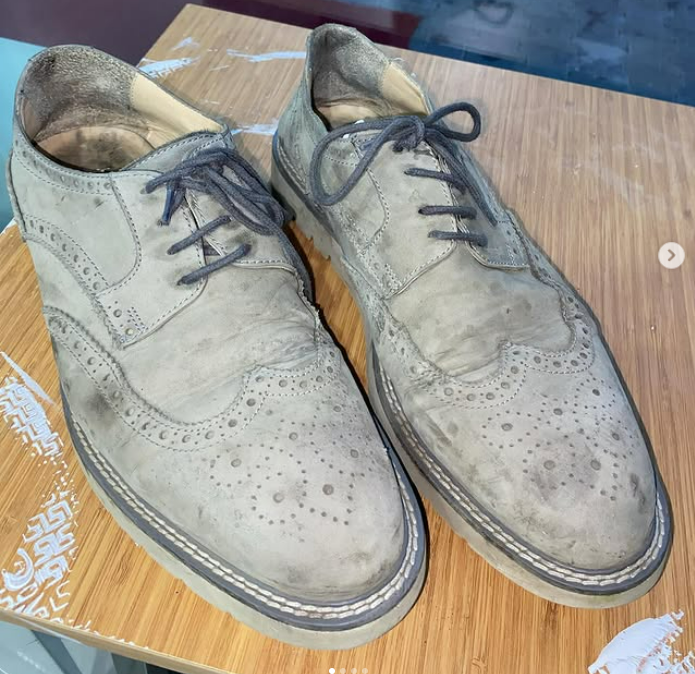

"İşçiliği mükemmel ve Nike ayakkabılari aynı sıfır gibi yapmış ellerinize sağlık paranı hakkını veren bir yer."
- Hatice K.
Ayakkabılarınıza ikinci bir şans verin!
Papatya Lostra olarak yılların verdiği tecrübe ve ustalıkla ayakkabılarınıza yeniden hayat veriyoruz. Deri eşya, mont tadilat ve boyama, çanta ve valiz tamiri gibi geniş bir yelpazede hizmet sunmaktayız. Kaliteli malzeme ve titiz işçilikle müşteri memnuniyetini her zaman ön planda tutuyoruz.
Bizi tercih ettiğiniz için teşekkür ederiz.
"İşçiliği mükemmel ve Nike ayakkabılari aynı sıfır gibi yapmış ellerinize sağlık paranı hakkını veren bir yer."
- Hatice K.
"Deforme olan ve taban kısımları çok kirlenmiş nike spor ayakkabılarımı kendim toparlayamayınca onarım için kendilerine verdim. Bu kadar iyi olacağını ben de tahmin etmemiştim. Yeni gibi olmuş gerçekten. Oldukça da hızlı teslim ettiler. Emeklerine sağlık."
- Ömer Faruk K.
"Ben Papatya Lostrayı tam 1 yıl önce keşefettim. 4 ayakkabımın da içinde deformeler oluşmuştu. Yasin abi sağ olsun eskisinden daha güzel yaptı ve daha uzun ömürlü oldu ayakkabılarım. İşini titizlikle ve hakkıyla yapan sayılı insanlardandır kendisi."
- Sinem
"Ben bütün ayakkabılarımı buraya veriyorum ve yeni gibi oluyor her defasında ustamın ellerine sağlık çok güzel işler yapıyor"
- Yücel Ö.
"Ben iki çift Adidas ve nike'larımı götürdüm Ustam çok güzel yapmış Ellerine kollarına sağlık işini tam ehli herkesi buraya bekleriz."
- Emin Ç.
"İşinin ehli sıfatının kendisidir esnaflığı güleryüzlülüğü zanaatkarlığı tartışılmaz kesinlikle tavsiye ederim gözünüz kapalı güvenebilirsiniz."
- Ali İ.
Tüm yorumlar Google yorumlarından alınmış olup, gerçek müşteri deneyimlerini yansıtmaktadır.
Burada, Papatya Lostra'nın uzman dokunuşlarıyla yenilenen ayakkabıların öncesi ve sonrası hallerini sergileyeceğiz. Eskimiş, yıpranmış ayakkabıların nasıl ilk günkü canlılığına kavuştuğunu ve hatta daha iyi bir görünüme ulaştığını görebilirsiniz.
Yapılan işlemler: Taban değişimi, komple boyama, cila.

Yapılan işlemler: Yırtık tamiri, su geçirmezlik uygulaması.
Yapılan işlemler: Renk değişimi, aksesuar ekleme.
Yapılan işlemler: Özel tasarım ve onarım.